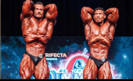

Mr. Olympia é o título concedido ao vencedor do concurso de fisiculturismo profissional masculino no Olympia Fitness & Performance Weekend de Joe Weider - uma competição internacional de fisiculturismo que é realizada anualmente pela Federação Internacional de Fisiculturismo (IFBB).[1] Criada por Joe Weider, sua primeira edição remonta a 18 de setembro de 1965 em Nova Iorque. Sendo a maior competição que representa um esporte onde predomina análises subjetivas que por intermédio de intervenções científicas, vem sendo proposto as possibilidades de análise quantitativas.[2] Joe Weider criou a competição para permitir que os vencedores do Mr. Universe continuem competindo e ganhem dinheiro.
O primeiro Mr. Olympia foi realizado em 18 de setembro de 1965, na Brooklyn Academy of Music, em Nova York, com Larry Scott ganhando seu primeiro de dois títulos consecutivos. Os recordistas de vitórias são Lee Haney (1984-1991) e Ronnie Coleman (1998-2005) com oito conquistas cada. O fisiculturista canadense Chris Bumstead é o atual campeao da competiçao
O caChristopher Adam Bumstead (Ottawa, 2 de fevereiro de 1995), mais conhecido como Chris Bumstead ou CBum, é pentacampeão do Mr. Olympia Classic Physique, tendo conquistado os títulos de 2019, 2020, 2021, 2022 e 2023.
O brasileiro Ramon Dino foi o vice-campeão do Mr. Olympia deste ano na categoria Classic Physique, atrás apenas do canadense Chris Bumstead, Os dois estavam entre os principais nomes do torneio, já que, na última edição, o topo do pódio foi o mesmo deste ano. Muitos brasileiros estavam na expectativa de que Ramon superasse Chris por conta da evolução do acreano em relação à disputa passada.
Ramon Rocha Queiroz (Rio Branco, 9 de fevereiro de 1995), mais conhecido com Ramon Dino ou "O Dinossauro do Acre",[1][2][3] é um fisiculturista profissional brasileiro, e o principal atleta "Classic" do Brasil. Atualmente é o vice-campeão do Mr. Olympia na categoria Classic Physique, e campeão do Arnold Classic Ohio. Seu peso limite dentro da categoria é de 103 kg. Em dezembro de 2016, Ramon Dino estreou nos palcos de fisiculturismo competindo como júnior em um show local. Logo na estreia, o atleta já conquistou um título.
ele nasceu no Acre e veio de uma família muito humilde, mas ele tem uma genética muito favoravel ao ganho de massa muscular e definição.
tambem sendo chamada como a melhor genetica do fisiculturismo